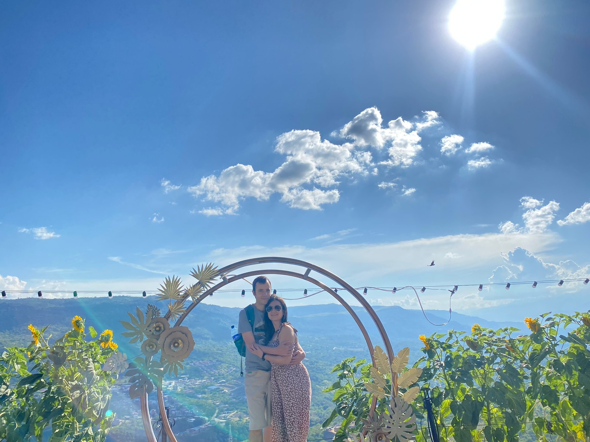
 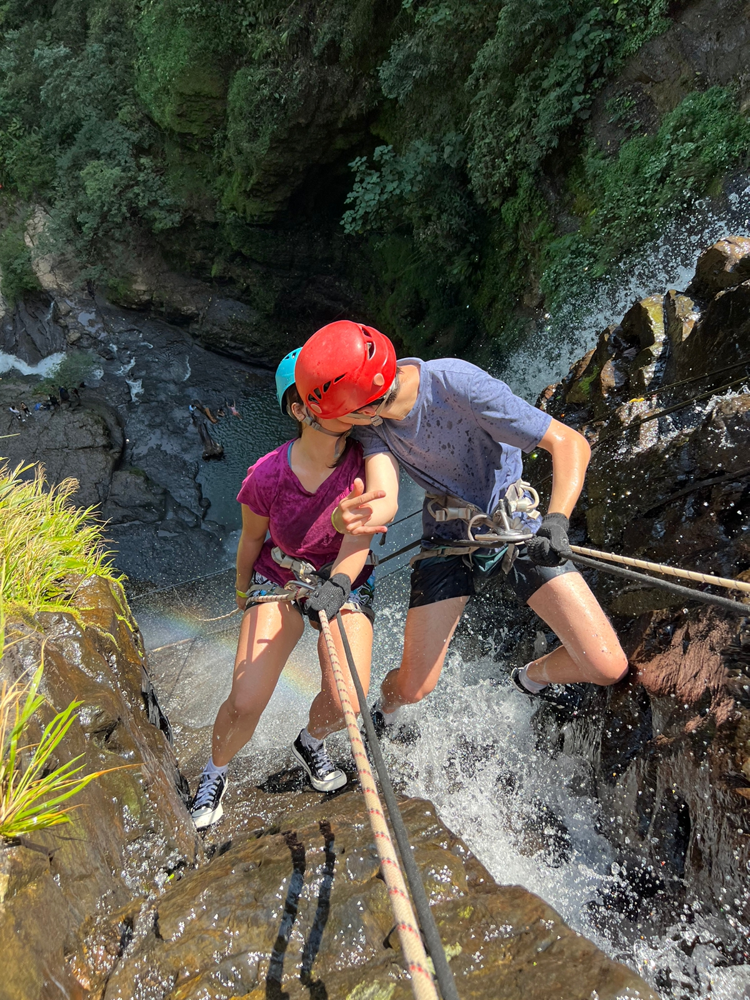
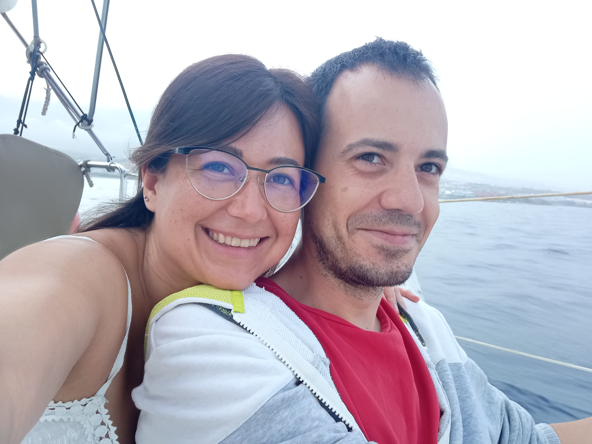
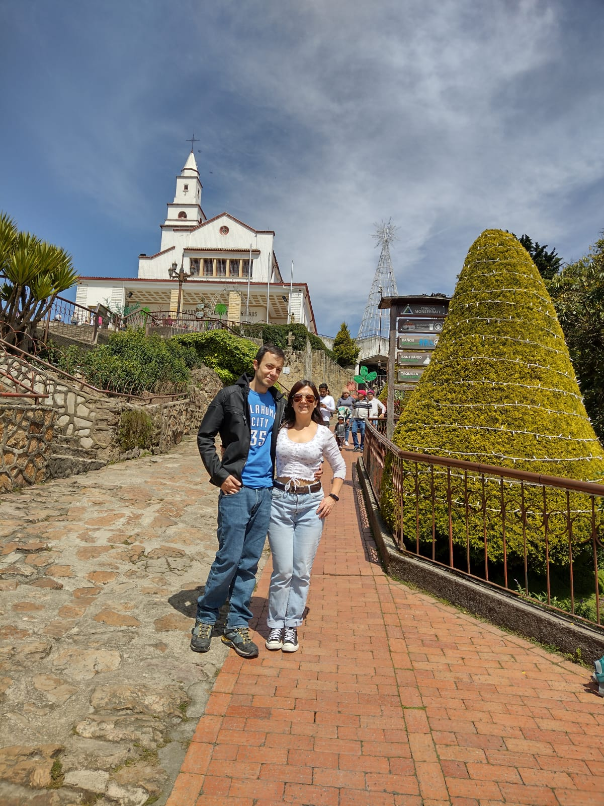
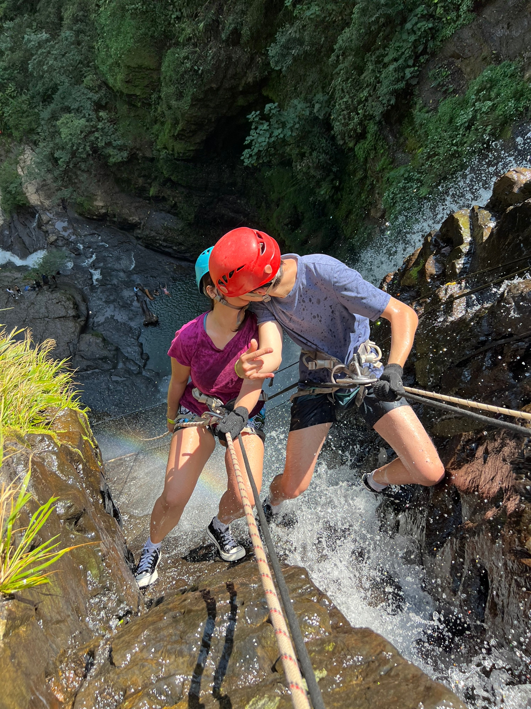
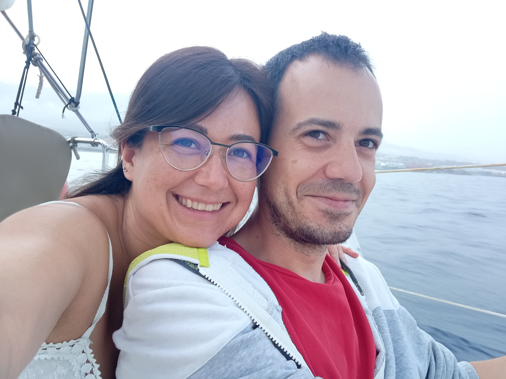
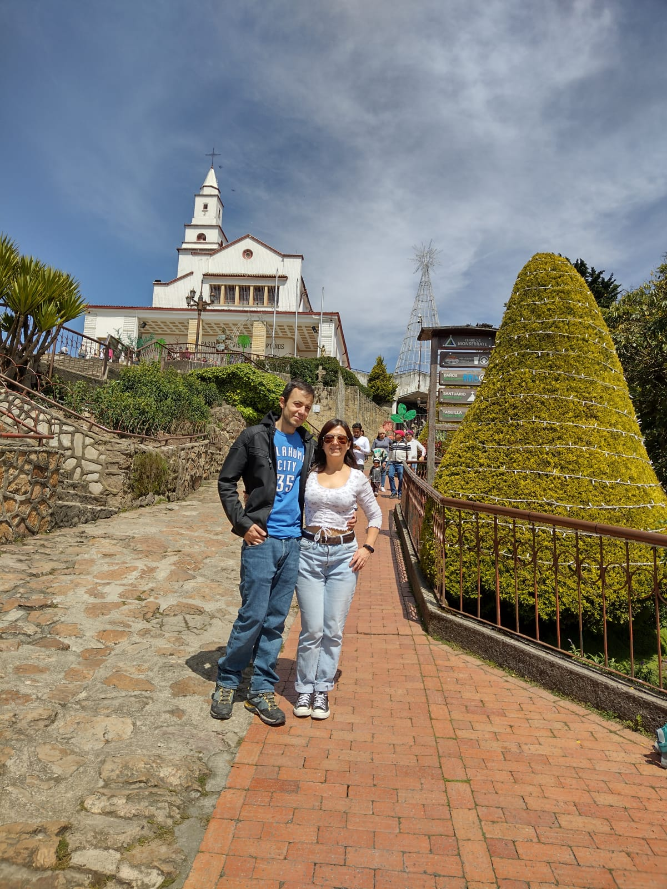
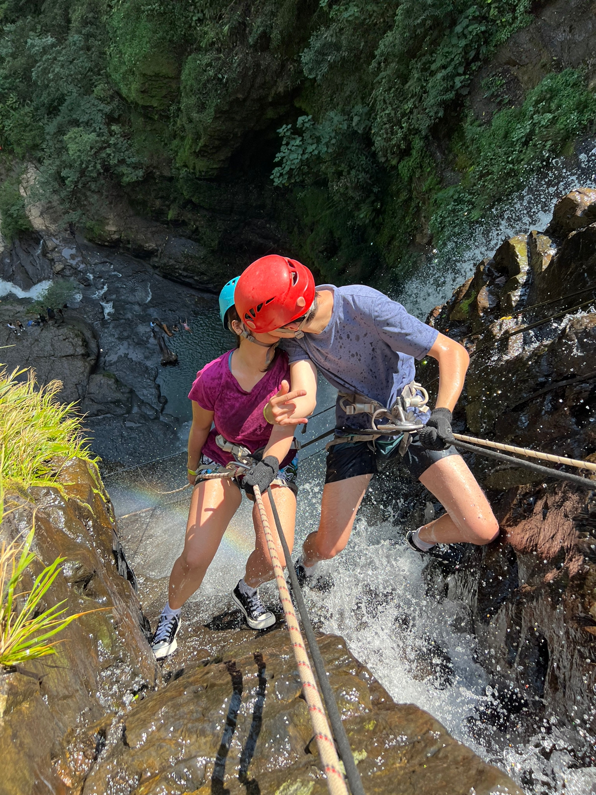
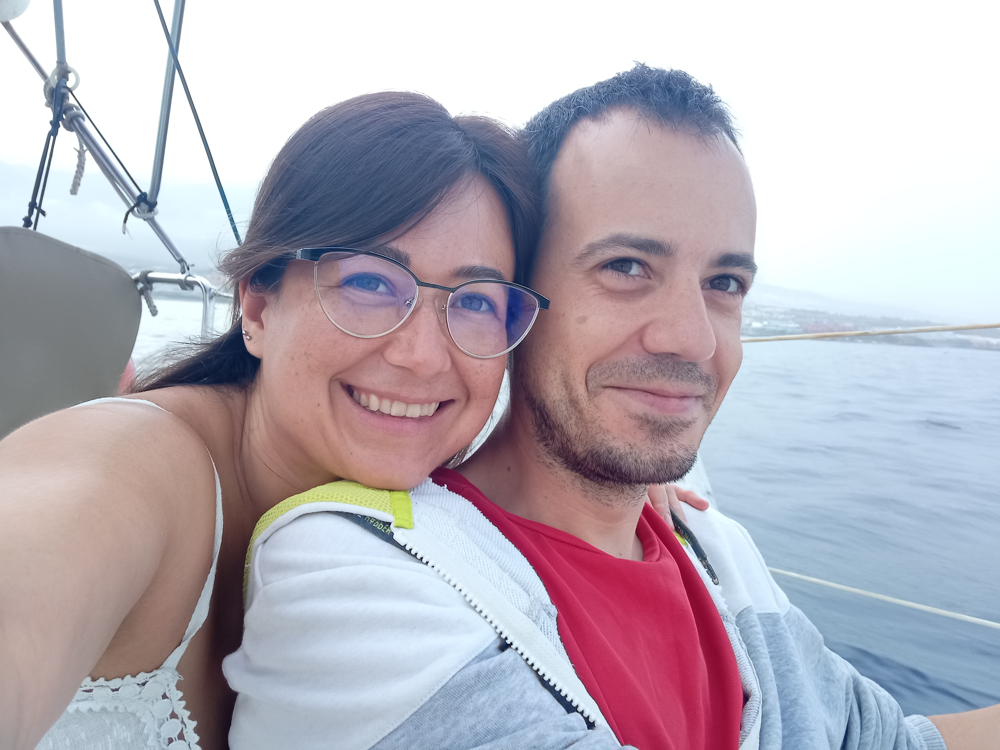
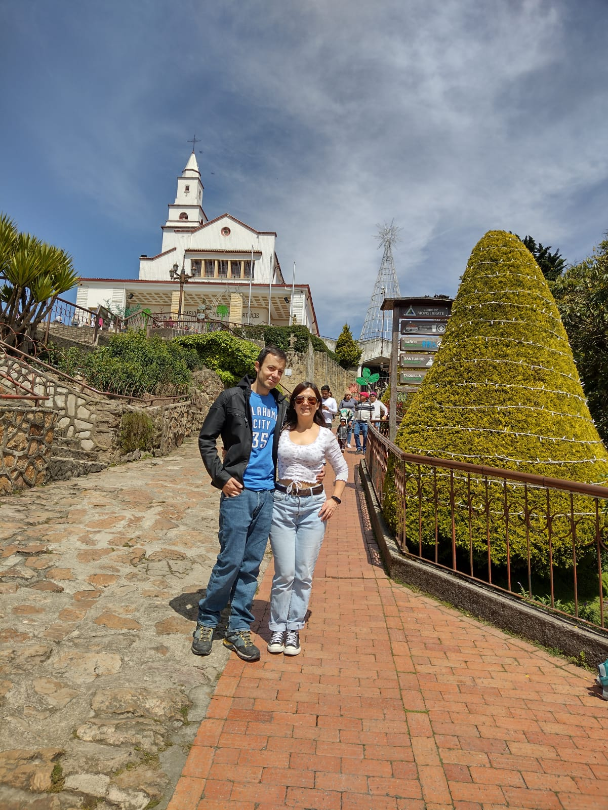
14 / 06 / 2025
Ha llegado ese momento tan especial...
¡Nos casamos!
Y con inmensa alegría, también celebraremos el bautizo de nuestro hijo,
Jorge Salamanca Miranda.
Nos llena de ilusión compartir este día tan significativo con todos vosotros.
Parroquia Santa María del Silencio
Calle Raimundo Fernández Villaverde, 18A, Chamberí, 28003 Madrid
17:30
Finca Valquijancho
Carretera San Agustín del Guadalix a Colmenar, km 4, 200, 28770 Colmenar Viejo, Madrid
19:30
Para nosotros el regalo más importante es vuestra compañía,
pero si queréis ayudarnos para nuestro viaje de novios os dejamos nuestro IBAN:
ES2701821275120202131374
Para mujeres:
Vestido largo
(Preferiblemente)
Para hombres:
Traje
Saldrán dos autobuses desde la iglesia aproximadamente a las 18:30.
Una parada intermedia en Plaza de Castilla y una parada final en la Glorieta de Cuatro Caminos.
Horas de regreso
(madrugada del domingo 15 de junio):
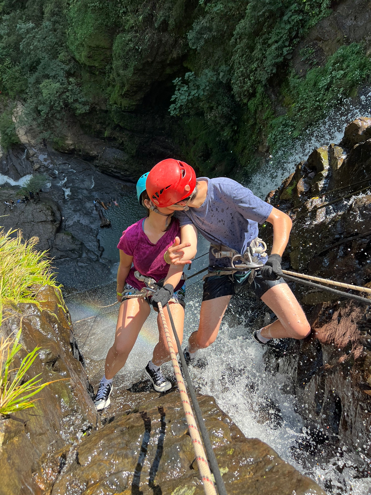
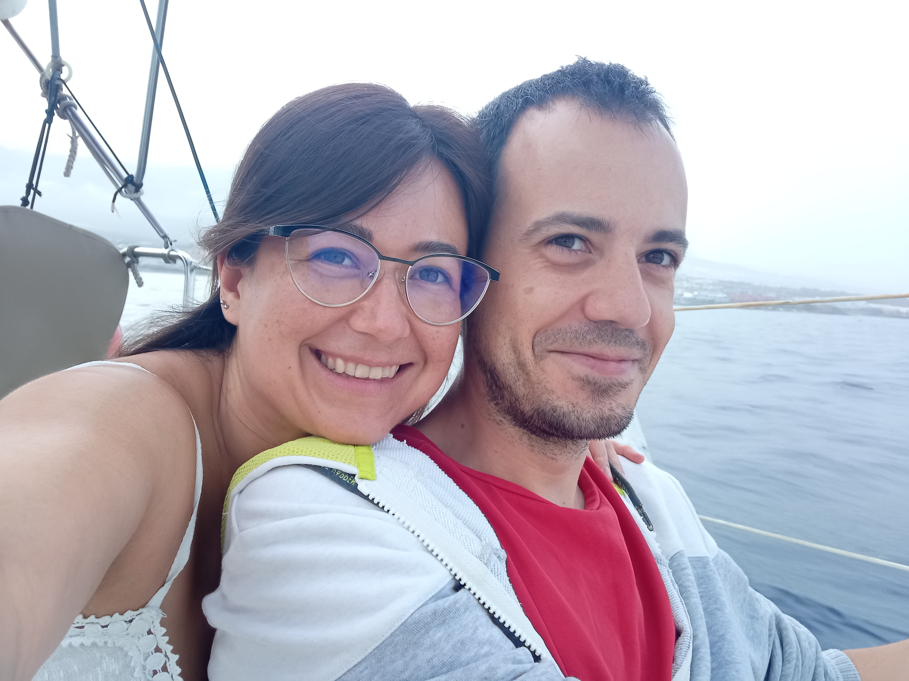
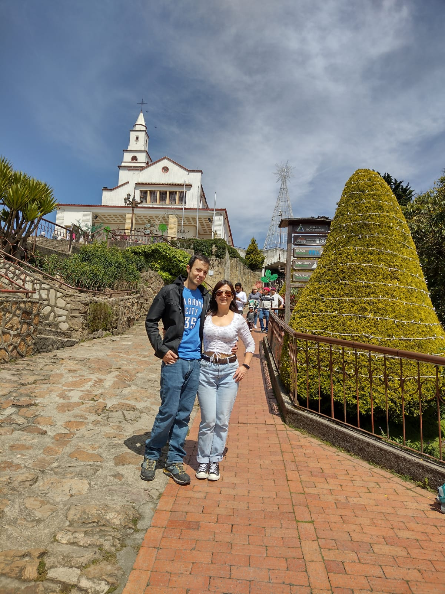